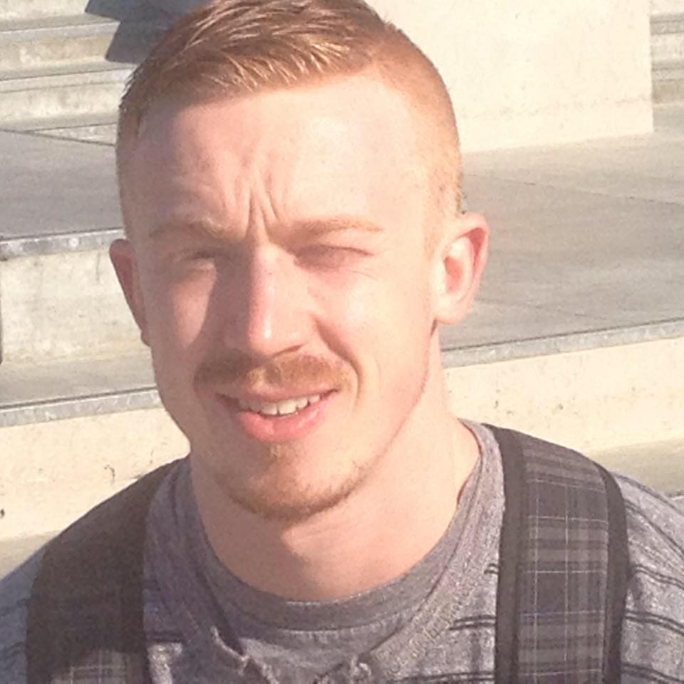

Benjamin James Gustafson
7951 250th street, Forest Lake, MN, 55025
Benjamesgustafson@gmail.com
651-407-9028
Linked-In
Experience
2010 – CURRENT
REGIONAL MANAGER, THE GOLD GUYS
- Sales Supervisor
- Facilitate Hiring Process
- Train employees
- Solve technical computer issues
MAY 2018 – AUGUST 2018
ENGINEEER INTERN, THE CITY OF MINNEAPOLIS
- Work with civil engineers to maximize efficiency of materials
- Monitored “Project Samater” in front of U.S. Bank stadium for 3 months
- Reported measurements to engineers and technicians
- Strengthened ability to work in teams
- Learned to read technical construction blueprints
Education
2018 - 2020
COMPUTER SCIENCE, UNIVERSITY OF ST THOMAS
- Member of Engineering club
2015 - 2018
ASSOCIATE IN ENGINEERING, CENTURY COLLEGE
- Vice President of Engineering Club
- Member of the rocket club
- Member of the math club
- Tutored students in math
- Learned to code a microcontroller for Robot competition
- Learned to code in C++